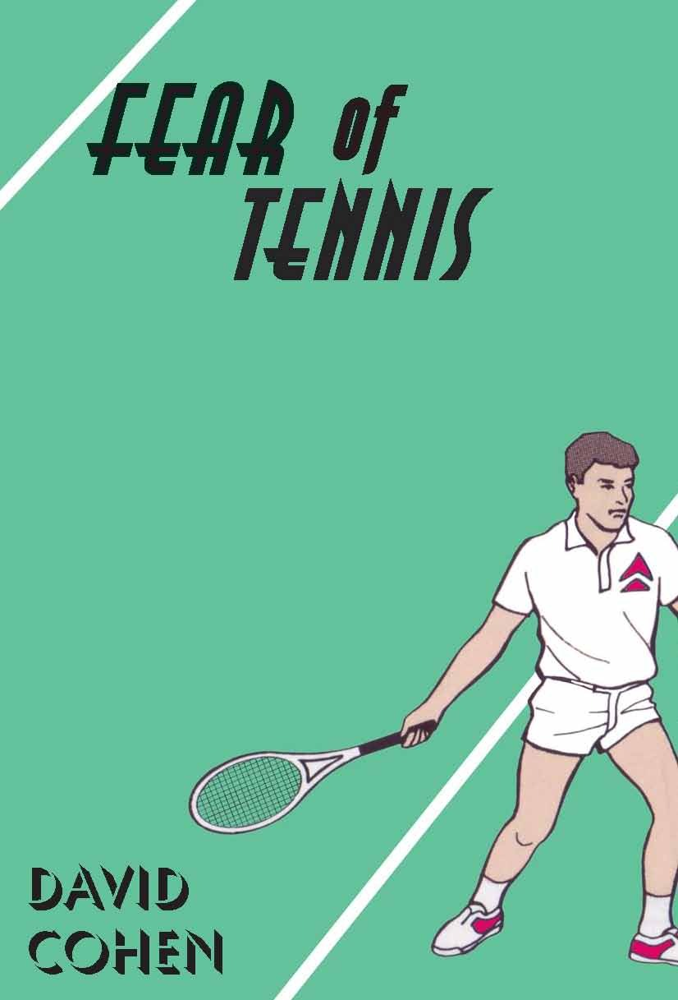

Fear of Tennis
David Cohen

Description
Cited as a Book of the Year (2007) by Les Murray in the Times Literary Supplement and The Age and The West Australian The back of Jason Blunt’s head filled me with unease. I could already feel my chest muscles tightening. I could almost hear them tightening – a creaking sound, like someone had inserted a key in my back and was slowly winding me up. An anxious sighting marks the re-appearance of high-school friend Jason Bunt in Mike Planner’s ordered life as a courtroom sound-recordist. Mike is a cool obsessive – an avid spectator of criminal trials and a connoisseur of restrooms, both public and domestic. A lighthouse-related disaster in Year Ten has left him with a debt to Jason. Jason has meanwhile taken up tennis with evangelical zeal, and Mike seizes on this in an ill-advised attempt to wipe the slate clean. Further complications arise when Mike’s Bible-reading co-worker Fiona introduces him to the Old Testament, and he grapples with questions of guilt, redemption, the Patriarch Abraham, and former Wimbledon champion Pete Sampras. Fear of Tennis – a novel about the impossibility of avoiding sport.
Description
Cited as a Book of the Year (2007) by Les Murray in the Times Literary Supplement and The Age and The West Australian The back of Jason Blunt’s head filled me with unease. I could already feel my chest muscles tightening. I could almost hear them tightening – a creaking sound, like someone had inserted a key in my back and was slowly winding me up. An anxious sighting marks the re-appearance of high-school friend Jason Bunt in Mike Planner’s ordered life as a courtroom sound-recordist. Mike is a cool obsessive – an avid spectator of criminal trials and a connoisseur of restrooms, both public and domestic. A lighthouse-related disaster in Year Ten has left him with a debt to Jason. Jason has meanwhile taken up tennis with evangelical zeal, and Mike seizes on this in an ill-advised attempt to wipe the slate clean. Further complications arise when Mike’s Bible-reading co-worker Fiona introduces him to the Old Testament, and he grapples with questions of guilt, redemption, the Patriarch Abraham, and former Wimbledon champion Pete Sampras. Fear of Tennis – a novel about the impossibility of avoiding sport.
{kind=link}
Information
| ISBN | 9781876044558 |
| Release | 2007 |
| Pages | 214 |
About the Author
Reviews
Owen Richardson, The Age
Parody: Fear of Tennis Owen Richardson The Age , 29 September 2007 Perth-born, Melbourne-based David Cohen’s first novel is a minimalist parody of dramas of guilt and atonement. Mike and Jason are high-school best-friends; one day Jas takes the rap for an act of foolishness on Mike’s part involving a toy light-house. After Jason is expelled they have little to do with each other until in adult life they run into each other on the bus: Mike is a perfectionist court reporter and Jason a corporate thug. It’s the comedy of syndromes: Mike is as obsessed with the cleanliness and mod cons of public toilets as Jason is with tennis, while Mike’s workmate Fiona, whom he is trying to date, is heavily into the Pentateuch (first five books of the Bible) - she fills Mike in on the trials of Abraham, a useful myth for his particular circumstance. Mike operates by second-guessing and mind-reading, and the plot and the incidental humour get mileage out of Mike’s inability to deal with anyone directly. The recessive absurdism has its appeal, and it wouldn’t be a bad thing if Fear of Tennis became a cult book: like Seinfeld, it makes Fabergé mountains out of everyday molehills. At the same time, the deliberate flatness of the writing threatens to make the whole thing too dry - Mike’s is the voice of pedantry and so is Cohen’s - at least until the accumulating ridiculousness and the elegance of the construction draw you forward.
Roger Bourke, Westerly
The Year's Work in Fiction 2007-2008: Fear of Tennis Roger Bourke Westerly , Vol. 53, 2008, pg. 54 Fear of Tennis by David Cohen, a Perth-born writer, mainly of short stories, now living in Melbourne, was another standout Australian first novel of 2007-08. It is not often one comes across a comic debut novel - certainly not such an accomplished one. ‘It wouldn’t be a bad thing if Fear of Tennis became a cult-book: like Seinfeld, it makes Fabergé mountains out of everyday molehills,’ the reviewer Owen Richardson wrote of it in the Melbourne Age . While not quite, like Seinfeld, ‘about nothing,’ Cohen’s novel is indeed quirky and offbeat with a dry wit and an acute eye for some of the absurdities of contemporary urban life. Its hero, Mike Planner, is a nerdy, obsessive-compulsive type who works as a courtroom sound-recordist in present-day Perth. He is also a man who has a fixation with hygiene and bathrooms, public and private: ‘The sight of a well-designed, well-maintained public toilet always fills me with pleasure.’ But Mike’s closeted existence is changed in unexpected ways after he happens to see his best mate from school, now a yuppie banker and tennis addict, on a bus. The plot resolves itself in the age-old comic tradition of a satisfying, ‘feel-good’ ending with all loose ends tied. I thoroughly enjoyed this novel: for its intelligence, its understated humour, its engaging central character, and, not least, its sure grasp of the conventions of the difficult craft of comic writing. Once again, this author is a new writing talent worth watching.
Overland Review
Fear of Tennis Ben Peek Overland , No. 191, Winter 2008, pg. 86 A dry-humoured novel featuring the obsessive-compulsive Mike Planner who works as a courtroom sound-recorder and practises his smiles in the toilet mirror. The novel begins when Planner sees an old school friend, Jason Blunt, on a bus and feels that he owes him for an incident in their childhood where the latter took the blame for something that the former did (how’s that for avoiding spoilers?). Unaware of this, Blunt, caught in his own obsession with tennis, invites Planner to join him and his coach Gary, an ex-pro player who never plays but who instead takes photos of Blunt playing. I found Fear of Tennis a little strained by end of two hundred pages, as Planner’s obsessive-compulsive nature, in combination with tennis itself, was not exactly to my taste. I would have liked a little more time devoted to Fiona, the student of religion on whom Planner develops a crush after she steals his cup - but I suspect I would have gone for anything that would have taken.me away from the tennis. Regardless, Cohen’s writing is tight, detailed and the dialogue rarely skips a beat.
Australian Book Review Review
Parody: Fear of Tennis Louise Swinn Australian Book Review , No. 299, March 2008 Fear of Tennis is David Cohen’s quirky and absurd first novel. It features the obsessive Mike Planner, whose interests include court reporting and bathrooms. When he bumps into Jason Bunt, his best friend from high school, Mike recalls how they fell out. At the centre of the story is a bizarre struggle towards redemption; Mike wants to atone for a past sin and believes that Jason’s series of ‘challenges’ are a way to do just that. So, somewhat perplexingly, Mike, who has never been interested in sport, begins to swim and play tennis, frequenting the gym with increasing regularity. Mike is not the only one whose obsessions litter Fear of Tennis . Jason, who holds his racquet even when he is at rest, spends evenings watching videos of his tennis practice. Halfway through, the book picks up pace. We meet Gary, Jason’s tennis coach, who tries to avert Jason’s tantrums with such aphorisms as ‘never surrender to the chemistry of anger’. While maintaining this rekindled friendship with Jason, and constantly training, Mike is holding down his job, and trying to find ways to woo a female colleague, who is studying the Old Testament. The humour derives from Mike’s assumptions and from his inability to communicate them to people. The situation is interesting enough, highlighting as it does the possible lengths that people can go to for redemption; but the prose, monotonous to reflect the orderliness of Mike’s life, makes this a dull read. The book needed a good edit and proofreading; this would not be worth mentioning if its absence wasn’t so distracting. By far the best thing about the novel is Gary; he is the caricature of the sports-crazed, adrenalin-fuelled trainer who quotes from the Tao Te Ching and, like Jason, doesn’t see humour in anything.
Citations as a Book of the Year
Citations as a Book of the Year (2007) West Australian writer David Cohen offered a sprightly, original novel titled Fear of Tennis (Black Pepper), in which a mild-mannered courtroom sound recordist and sports-hater gets enmeshed in high-tech athleticism as an act of atonement for a wrong he committed a dozen years before. Les Murray, The Age , 8 December 2007 and The West Australian David Cohen’s Fear of Tennis (Melbourne, Black Pepper) stood out among the novels I read. A sports-hating courtroom recordist enmeshes himself in high-tech athleticism to atone for an old wrong, and the rabbinical underpinnings of the original tale are discreetly conveyed. Les Murray, the Times Literary Supplement , 1 December 2007